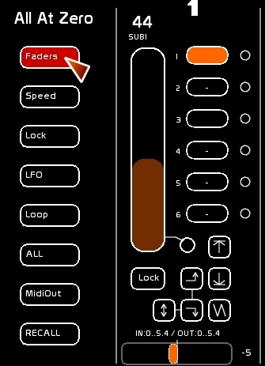
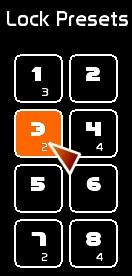
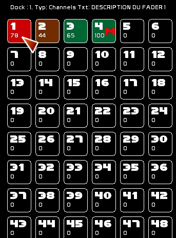

Sur les côtés des faders ( avant le Fader 1 et après le Fader 48), vous avez accès à des commandes rapides:
Permet de mettre à zéro de manière sélective les 48 faders.
Lors de cette mise à zéro, un snapshot est fait de l'état de ces faders.
Ce qui permet de rappeler l'état avant mise à zéro par la commande [RECALL].
Cette fonction est prévue pour les concerts. Elle est cut, sans tempo.

Les 48 Faders sont mis à zéro.
Si des LFOs sont présents, sans boucle ( Loop), ils seront éteints, considérant que le mouvement est fini ( niveau = 0).
Les 48 accéléromètres sont remis à 64 ( vitesse normale).
Les 48 Faders sont débrayés du Lock.
Les LFOs des 48 Faders sont mis à zéro.
Toutes les boucles des 48 Faders sont déselectionnées.
Tout en même temps.
Le renvoi midi out des faders est désactivé sur les 48 faders.
Lors des actions [ALL AT ZERO] décrites ci dessus, une sauvegarde est faite en mémoire vive de l'état de ce que l' on va mettre à zéro. On rappelle alors l'état avant mise à zéro.
! Attention, concernant la commande [RECALL] avec une BCF 2000, vous aurez besoin d'activer la transformation Key_ON Vel 0 = Key_Off dans dans Preset / Options ( [ Midi CFG ])
Les états de Lock sont aussi enregistrables dans 8 Lock Preset.
On peut rappeler ces prépas d'un simple click, ou via une touche midi.

Sur les côtés un petit panneau présentant l'état de sortie des 48 faders permet :
Ce panneau peut servir aussi de zône d'action rapide, évitant les menus de confirmations, lorsque:
…. clicker la case du fader affectera l'action choisi sur le dock actif du fader.
